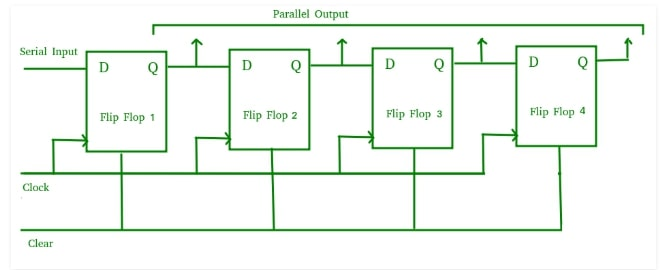

VHDL Code for 4-Bit Shift Register
Shift Register
VHDL Code for shift register can be categorised in serial in serial out shift register, serial in parallel out shift register,
parallel in parallel out shift register and parallel in serial out shift register.
Parallel In -- Parallel Out Shift Registers (PIPO)
The shift register, which allows parallel input (data is given separately to each flip flop and in a simultaneous manner)
and also produces a parallel output is known as Parallel-In parallel-Out shift register.
The logic circuit given below shows a parallel-in-parallel-out shift register. The circuit consists of four D flip-flops which
are connected. The clear (CLR) signal and clock signals are connected to all the 4 flip flops. In this type of register, there
are no interconnections between the individual flip-flops since no serial shifting of the data is required. Data is given as
input separately for each flip flop and in the same way, output also collected individually from each flip flop.

A Parallel in Parallel out (PIPO) shift register is used as a temporary storage device and like SISO Shift register it acts
as a delay element.
PIPO
VHDL CODE:
library ieee;
use ieee.std_logic_1164.all;
entity pipo is
port(
clk : in std_logic;
D: in std_logic_vector(3 downto 0);
Q: out std_logic_vector(3 downto 0)
);
end pipo;
architecture behaviour of pipo is
begin
process (clk)
begin
if (CLK event and CLK = '1') then
Q < = D;
end if;
end process;
end architecture behaviour;
|
Serial In -- Parallel Out Shift Registers (SIPO)
The shift register, which allows serial input (one bit after the other through a single data line) and produces a parallel output
is known as Serial-In Parallel-Out shift register.
The logic circuit given below shows a serial-in-parallel-out shift register. The circuit consists of four D flip-flops which are
connected. The clear (CLR) signal is connected in addition to the clock signal to all the 4 flip flops in order to RESET them.
The output of the first flip flop is connected to the input of the next flip flop and so on. All these flip-flops are synchronous
with each other since the same clock signal is applied to each flip flop.

The above circuit is an example of shift right register, taking the serial data input from the left side of the flip flop
and producing a parallel output. They are used in communication lines where demultiplexing of a data line into several parallel
lines is required because the main use of the SIPO register is to convert serial data into parallel data.
SIPO
VHDL CODE:
library ieee;
use ieee.std_logic_1164.all;
entity sipo is
port(
clk, clear : in std_logic;
Input_Data: in std_logic;
Q: out std_logic_vector(3 downto 0) );
end sipo;
architecture behaviour of sipo is
begin
process (clk)
begin
if clear = '1' then
Q < = "0000";
elsif (CLK event and CLK='1') then
Q(3 downto 1) < = Q(2 downto 0);
Q(0) < = Input_Data;
end if;
end process;
end architecture behaviour;
|
Parallel In -- Serial Out shift register (PISO)
The shift register, which allows parallel input (data is given separately to each flip flop and in a simultaneous manner) and
produces a serial output is known as Parallel-In Serial-Out shift register.
The logic circuit given below shows a parallel-in-serial-out shift register. The circuit consists of four D flip-flops which are
connected. The clock input is directly connected to all the flip flops but the input data is connected individually to each flip
flop through a multiplexer at the input of every flip flop. The output of the previous flip flop and parallel data input are
connected to the input of the MUX and the output of MUX is connected to the next flip flop. All these flip-flops are synchronous
with each other since the same clock signal is applied to each flip flop.
A Parallel in Serial out (PISO) shift register us used to convert parallel data to serial data.
PISO
VHDL CODE:
library IEEE;
use IEEE.STD_LOGIC_1164.all;
entity piso is
port(
clk : in STD_LOGIC;
reset : in STD_LOGIC;
load : in STD_LOGIC;
din : in STD_LOGIC_VECTOR(3 downto 0);
dout : out STD_LOGIC
);
end piso;
architecture behavioral of piso is
begin
piso : process (clk,reset,load,din) is
variable temp : std_logic_vector (din'range);
begin
if (reset='1') then
temp := (others=>'0');
elsif (load='1') then
temp := din ;
elsif (rising_edge (clk)) then
dout <= temp(3);
temp := temp(2 downto 0) & '0';
end if;
end process piso;
end architecture behaviour;
|
Serial In -- Serial Out shift register (SISO)
The shift register, which allows serial input (one bit after the other through a single data line) and produces a serial
output is known as Serial-In Serial-Out shift register. Since there is only one output, the data leaves the shift register
one bit at a time in a serial pattern, thus the name Serial-In Serial-Out Shift Register.
The logic circuit given below shows a serial-in serial-out shift register. The circuit consists of four D flip-flops which
are connected in a serial manner. All these flip-flops are synchronous with each other since the same clock signal is applied
to each flip flop.
The above circuit is an example of shift right register, taking the serial data input from the left side of the flip flop.
The main use of a SISO is to act as a delay element.
SISO
VHDL CODE:
library IEEE;
use IEEE.STD_LOGIC_1164.ALL;
entity siso is
Port (
si : in STD_LOGIC;
clk : in STD_LOGIC;
so : out STD_LOGIC);
end siso;
architecture Behavioral of siso is
signal temp : std_logic_vector(3 downto 0);
begin
process(clk)
begin
if(clk'event and clk ='1')then
temp <= si & temp(3 downto 1);
end if;
end process;
so <= temp(0);
end architecture behavioral;
|
More VHDL Code:
HOW TO INSTALL QUARTUS-II AND CREATE NEW FILE
INTRODUCTION VHDL CODES
ALL LOGIC GATES VHDL CODES
ADDER AND SUBTRACTOR VHDL CODES
MULTIPLEXER AND DEMULTIPLEXER VHDL CODE